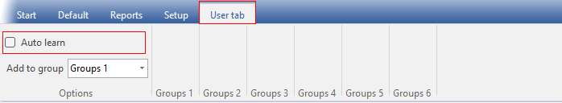
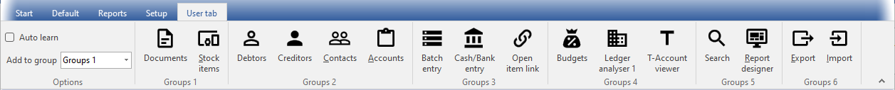
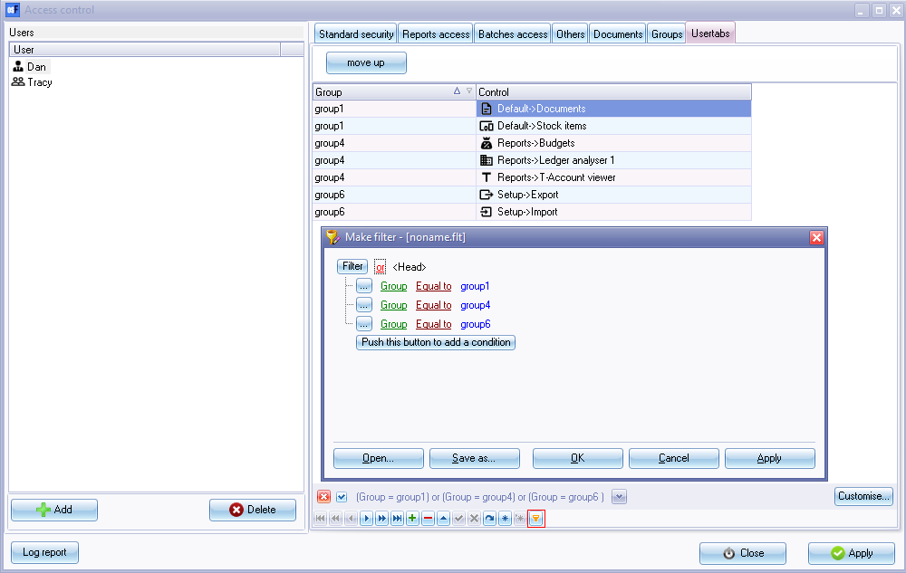

Access control - Usertabs
User tab ribbon
The User tab ribbon in osFinancials is a customisable quick menu that allows you to manage user navigation in up to six (6) groups within a Set of Books. This makes it convenient for users to access their frequently used features.

Activating the Auto-learn feature: The "Auto-learn" feature, when selected (ticked), automatically adds the last accessed options to the User tab ribbon in up to six (6) groups. This makes it convenient for users to access their frequently used features.
Deactivating Auto-learn feature: Once you have populated the User tab ribbon with the desired shortcuts, you can deactivate the "Auto-learn" feature by removing the tick from the "Auto-learn" field. This ensures that the User tab ribbon retains the manually selected options and doesn't automatically update based on the last accessed features.
Default ribbon: By default, when opening the Set of Books, the Default ribbon is displayed. However, if the User tab ribbon is activated and configured, it will automatically display the User tab ribbon instead of the Default ribbon upon opening the Set of Books.

Manually configure the User tab ribbon: The User tab ribbon may be changed or set manually in the Usertabs tab on the Setup → Access control (Setup ribbon).
|
|
Removing Control icons: If any of the Control icons are added, you may remove it from the "User tab". For example, "Do year-end" is only performed once a year, you may select a different feature to replace it, or simply delete it from the list. |

By customizing the User tab ribbon, you can streamline user navigation, enhance efficiency, and tailor the interface to match the specific needs and preferences of each user in a Set of Books.
Configure User tab ribbon in Access control
Once you have activated the User tab ribbon in osFinancials and want to make edits or manually configure its options, you can utilise the Usertabs tab within the Access control feature. This tab allows you to manage the configuration of the User tab ribbon.
To set (change / edit) User ribbon in Access control:
- On the Setup ribbon, click on the Setup → Access control menu. Then, navigate to the Usertabs tab. This tab allows you to manage the configuration of the User tab ribbon.

- Selecting the user: Ensure that the correct user is selected for whom you want to create or add the access options on the User tab ribbon. If needed, click on the User icon to select the desired user.
- Adding a new option to the User tab ribbon:
- Click in the Add record icon to create a new record. Select a Control option from the available options on the list and select the Group (group 1 to 6).
- Click on the Save record icon to add the record.
- Removing an existing option from the User tab ribbon: To remove an existing option from the list, you can select a Control option you wish to remove from the User tab ribbon.
- Click in the Delete record icon to remove (delete) an existing option.
- Click on the Save record icon to save the record.
- Rearranging options: If you want to change the order of the options on the User tab ribbon, you can achieve it by changing the group of the option. Each option is assigned to a specific group, and the order of the groups determines the order in which the options are displayed on the ribbon. This allows you to customize the layout of the ribbon to match your preferred workflow. Click on the Save record icon to save your changes.
- Applying changes: Click on the Apply button to save the changes for the selected user.
- Customising User tab ribbons for other users: If necessary, select the next available user and configure their options in the same manner.
- Finalizing changes: Once you have finished setting the access levels for all desired users, click on the Close button to exit the "Access control" screen.
By using the Usertabs tab within the Access control feature, you have the flexibility to customize and fine-tune the User tab ribbon in osFinancials based on your specific preferences and requirements.
Filter options
The User tab ribbon also provides filter options, allowing you to create filter files, save them, and load them as needed. This helps in managing and organising data based on specific criteria. 